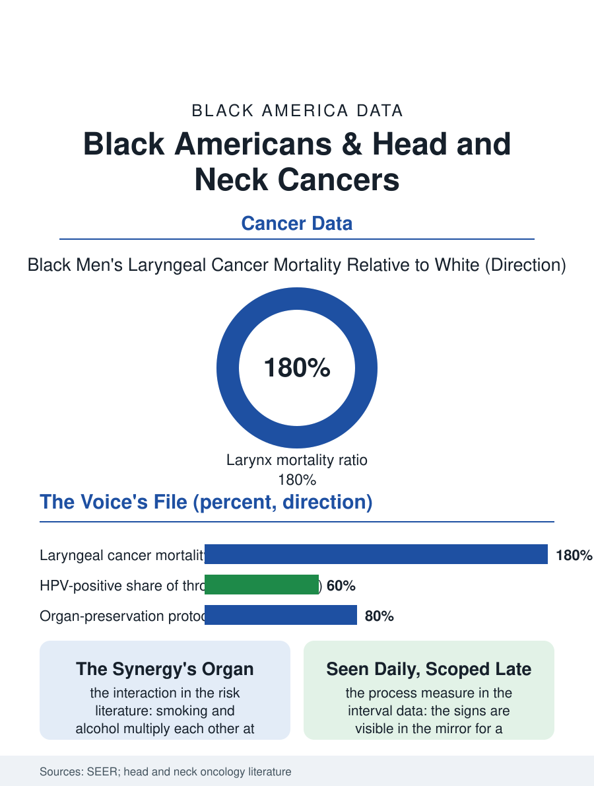

Black Public Health
The Mirror's Warning: Black Americans and Head and Neck Cancers
The larynx's steep gradient, the throat's new virus, and signs visible in the mirror for a season before the scope. The head and neck file.

Cancers of the head and neck, the mouth, throat, larynx, and sinuses, run in Black Americans at higher mortality than the white population's with an incidence crossover by site, and the file's recent history is a tale of two diseases: the smoking and alcohol era's cancers declining, and the HPV-driven throat cancers rising on a different demographic map whose Black burden the data are now drawing. This article reads the head and neck file.
Sites and Their Stories
The registry data split by the anatomy: the larynx, the voice box, carries the file's steepest Black gradient, its incidence and mortality in Black men among the highest of the section's table, composed of the smoking and alcohol files' synergy, the two exposures multiplying each other in the risk literature's clearest interaction; the oral cavity's cancers follow the same exposures with the dental file's contribution, the neglected dentition and the late dental visit being the oral cancer's detection system in the population whose dentist is an emergency's address; and the oropharynx, the tonsils and the tongue's base, is the HPV file's territory, the sexually transmitted virus's cancers rising across the era in the younger, less smoking population, their Black incidence lower than the white in the current series but their Black survival worse in the matched analyses, the file's recurring signature. The stage file is the detection story's: the head and neck cancers announce themselves in the mirror and the voice, the sore that does not heal, the hoarseness past the guideline's weeks, the neck's lump, and the interval from the sign to the ENT's scope is the file's process measure, distributed by the dental and primary care access files that own the first look. The reconstruction file deserves its sentence in the treatment's ledger, because the free flap and the prosthetic rehabilitation that restore the face's function and the speech's mechanics are themselves specialized services whose distribution by center decides whether the survivor's survival is lived in public or in retreat, a quality the outcome registries are only beginning to count beside the years.
The Treatment's Price in Function
The treatment file for the head and neck is oncology's most functional: the surgery and the radiation and the chemotherapy preserve life at prices the survivors pay in the voice, the swallow, and the face, so that the outcome data's survival figures are only the ledger's first column, and the disparities within it, the Black patient's receipt of the organ-preservation protocols and the reconstructive services, distribute by the center's volume and the insurance's terms in the pattern of the other surgical files. The HPV era has redrawn the treatment's map, the virus-positive cancers' better prognosis driving the de-escalation trials whose enrollment, per the trials file, underrepresents the Black patient whose virus-negative disease is the one the older regimens were built for, an inversion the file records carefully. The rehabilitation file, the speech and swallow therapy of the PT file's pattern, is the survivorship's core and its distribution the access map's own. The dental file completes the circuit: the radiation's dental devastation and the pre-treatment dental clearance are the cancer's hidden curriculum, delivered at the dental access file's usual terms.
The Mirror's Warning
The head and neck file closes on the mirror, because this cancer's early signs are visible to the patient and the barber and the dentist before any instrument, and the system's failure is the referral's interval rather than the technology's absence, the sore at the tongue's edge seen daily for a season before the biopsy names it. The prevention file is the exposures' own: the smoking and alcohol declines are already in the incidence's trend, and the HPV vaccination of the immunization file is the throat file's future prevention, its uptake in the Black adolescent cohorts being, on the current data, the determinant of whether the HPV era's map equalizes or stratifies. The registries count the cases in the thousands, the larynx's gradient the steepest. The file's last entry is the voice's: the laryngectomy's survivor speaking through the electrolarynx at the support group's podium, the voice the file's data count as a survival, in the population the exposures chose and the detection's interval failed, whose testimony, mechanical and unmistakable, is the file's own abstract read aloud.
More in Black Public Health
Hypertension Among Black Adults: Prevalence, Control, and Consequences
About 55 percent of Black adults have hypertension — the highest rate of any U.S. group. Prevalence, onset, control, and the stroke, heart, and kidney consequences in the data.
Diabetes Among Black Adults: Prevalence and Complications
Nearly one in five Black adults has diabetes, diagnosed or undiagnosed — and its complications fall with particular weight. The CDC data on prevalence, control, and outcomes.
Black Life Expectancy: The Gap at Birth and Its Causes
Black life expectancy at birth is about 73 years, roughly five years below the national figure — the summary measure of every health gap in this section. The CDC data.
Source: National Cancer Institute SEER program; head and neck oncology outcomes and HPV epidemiology literature.